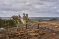
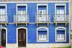
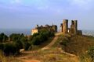
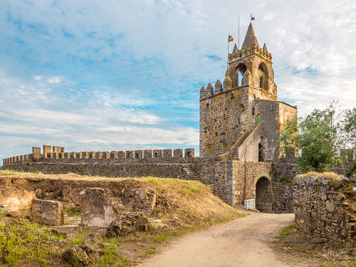
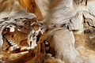
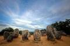
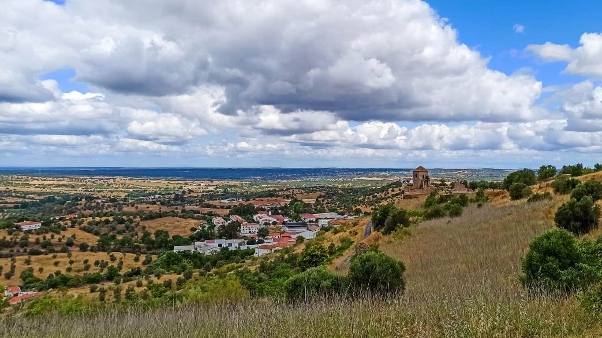

Fotografias







Vídeo
Poesia
No outeiro de pedra dorme o castelo,
guarda de um tempo que o vento não leva.
Sob o montado, a sombra é castelo
de sobreiros que a terra sustenta e eleva.
Nas grutas do Escoural, ecoa o passado,
vozes de mãos que a pedra gravaram.
Montemor-o-Novo, coração alentejano,
onde o silêncio e a história se juntaram.
Montemor-o-Novo, entre história e paisagem